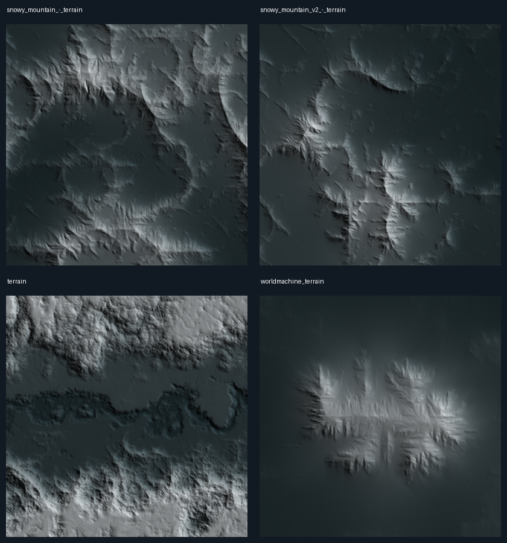

Dört modelin dönüştürülmüş geometrisinden yükseklik çıkarıldı. GLB'lerdeki 4K ve 2K malzeme görüntüleri yükseklik haritası olarak kullanılmadı. Su düzlemi ayıklandı; üçgenler kaynak UV alanına barycentrik olarak örneklendi. Her kaynak için 1024², 16 bit doğrusal yükseklik PNG'si üretildi. Yeniden örnekleme, kaynak geometrinin taşıdığından fazla ayrıntı üretmez.
| Kaynak | Üreten | Kaynak ve lisans | Çıkarılan yükseklik |
|---|---|---|---|
| Snowy Mountain - Terrain 260,642 arazi üçgeni | artfromheath (https://sketchfab.com/artfromheath) | Özgün model · CC BY 4.0 | 1024² / 16 bit PNG Çalışma: 512² |
| Snowy Mountain V2 - Terrain 524,288 arazi üçgeni | artfromheath (https://sketchfab.com/artfromheath) | Özgün model · CC BY 4.0 | 1024² / 16 bit PNG Çalışma: 512² |
| Terrain 2,000,000 arazi üçgeni | FNG (https://sketchfab.com/FirstNG) | Özgün model · CC BY 4.0 | 1024² / 16 bit PNG Çalışma: 1024² |
| Worldmachine Terrain 260,642 arazi üçgeni | Hannes Delbeke (https://sketchfab.com/han) | Özgün model · CC BY 4.0 | 1024² / 16 bit PNG Çalışma: 512² |
Değişiklikler: geometriden yükseklik çıkarma, normalizasyon, Lanczos yeniden örnekleme, 16 bit nicemleme, küre üzerinde döndürme/ölçekleme ve yumuşak sınır birleştirmesi. Kaynak sanatçılar uygulamayla bağlantılı değildir. Özgün model kredileri korunmuştur; bu yükseklik türevleri de CC BY 4.0 kapsamında sunulur.
Çalışma atlası 3,5 MiB. Kaynak GLB toplamı 222.8 MB; bu GLB'ler uygulama açılırken yüklenmez. Renkler ve kar çizgisi gezegenin iklim/yükseklik sistemiyle hesaplanır.
